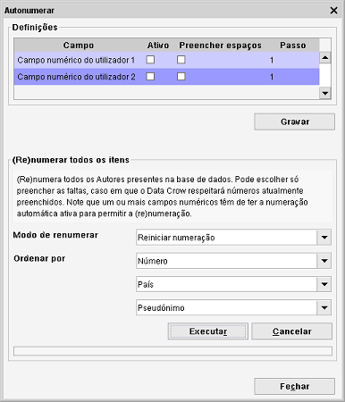

Numeração automática
Caminho de menu: Ferramentas > Numeração automática
Pode usar esta ferramenta para numerar os seus itens. É bastante fácil numerar os seus itens e também
renumerá-los, se quiser.

Há várias opções disponíveis para a numeração automática.
Campo
Os campos que pode selecionar são os campos personalizados. Pode renomear estes campos nas
Definições gerais de campos.
Ativo
Permite a numeração automática neste campo. Se ainda não estiver, também torna o campo ativo e visível.
Preencher espaços
Quando tem três itens com um número atribuído a cada (1,2,3) e decide apagar o item com o número 2, pode reutilizar
este número para um novo item.
Com esta opção desativada, o Data Crow atribuiria ao novo item o número 4 em vez de preencher o espaço usando o
número 2, que ficou disponível.
(Re)numerar todos os itens
Pode atribuir um novo número exclusivo a todos os itens.
Renumber Modus
Há duas formas de renumeração disponíveis: atribuir um novo número a todos os itens, ou só os itens
sem número recebem um número.
Ordenar por
Pode definir a ordem para a ação de renumeração.